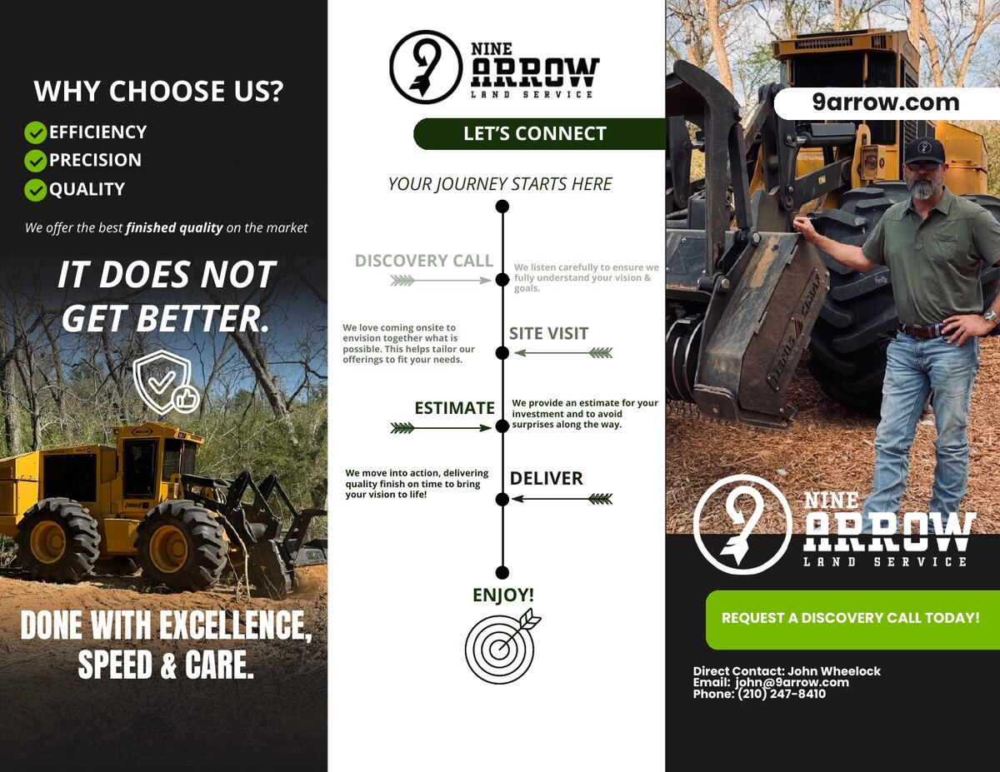
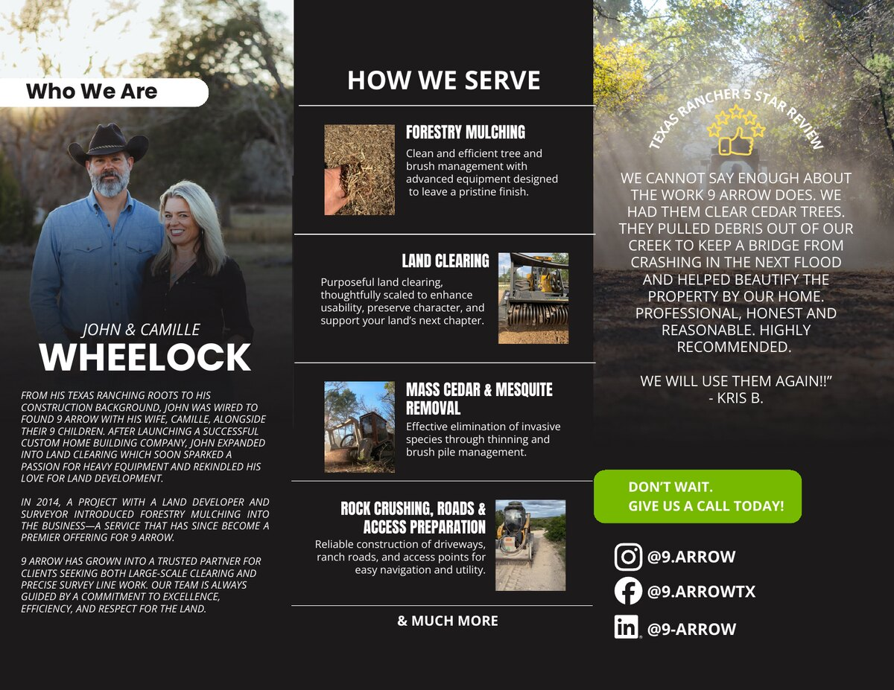
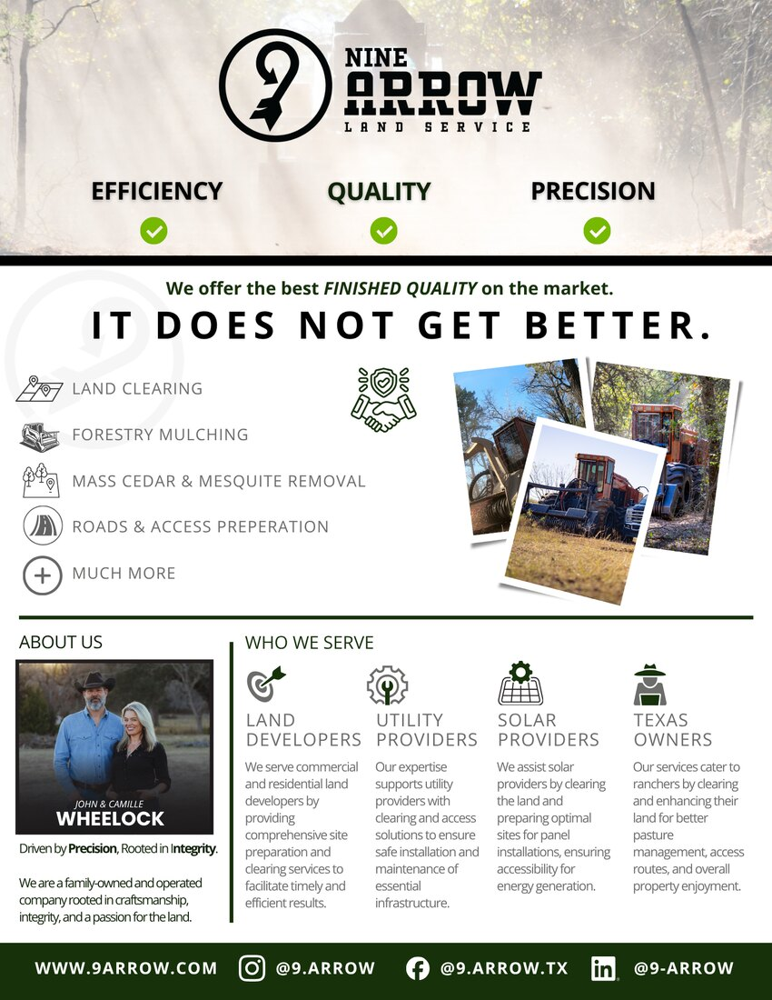
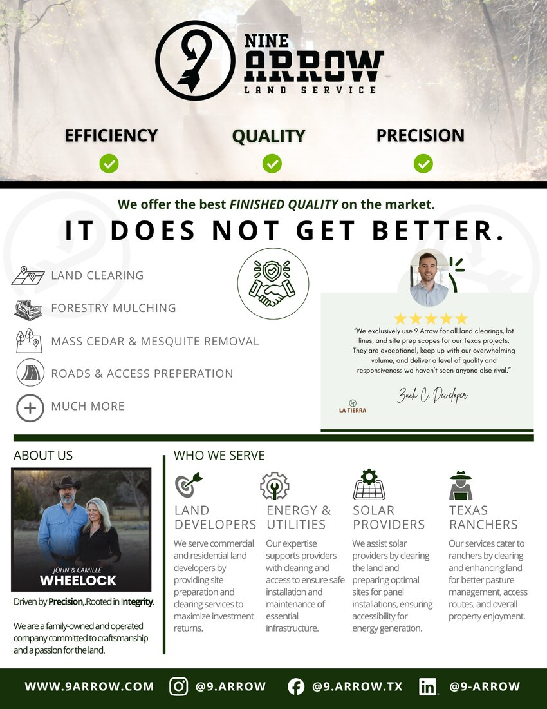

Owning direct mail end to end — and running it with the same rigor as a paid digital channel rather than a "spray and pray" print drop.
Direct mail is easy to treat as a one-off cost center: design a postcard, buy a list, mail it, hope it works. The opportunity was to run it like performance media — with offers, segmentation, creative testing, and attribution that prove out its place in the funnel.
Turning a creative and video team into a high-volume engine that feeds paid and lifecycle — with the structure to keep quality high as output scales.
At scale, creative is the constraint on growth. Audiences fatigue faster than budgets do, so the team has to ship a steady volume of fresh, on-brand concepts — without burning out or drifting off-strategy.
Building AI agents that absorb the repetitive layer of marketing work — so the team spends its best hours on strategy and creative, not spreadsheets.
A growing team loses an enormous amount of time to necessary-but-repetitive work: pulling the same reports, drafting variations, checking that a testimonial is approved. That time should go to thinking, not formatting.
Owning a multi-million-dollar, multi-channel budget and turning it into a predictable, revenue-driving system optimized for efficiency, not just volume.
More budget exposes every weakness in targeting, creative, and measurement at once. The mandate was to grow spend aggressively while holding — and improving — efficiency targets.
A Texas land-clearing and forestry mulching company I took from scattered marketing to a complete, lead-generating system — website, SEO, local presence, CRM, and a full print brand kit, all owned end to end.
A cohesive brand and a marketing engine that actually produces — including 10 qualified leads generated through the new site and local presence, with HubSpot in place to manage every one. A small, family-owned business now has the same caliber of marketing system as companies many times its size.




Download my resume or get in touch — I'm open to Director-level and senior growth leadership roles.
⬇ Download Resume (PDF) Contact Me